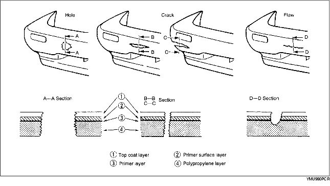
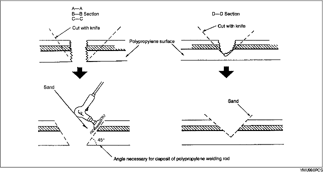
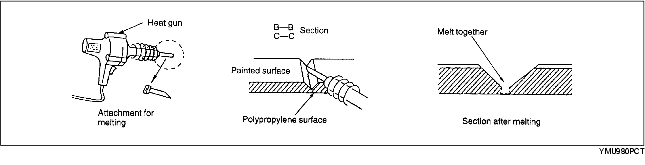
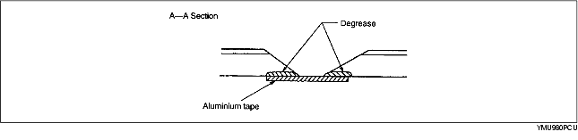
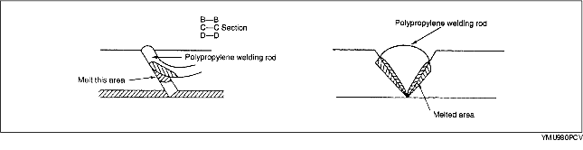
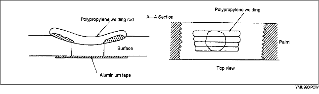
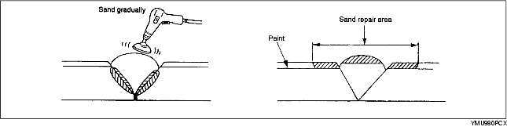
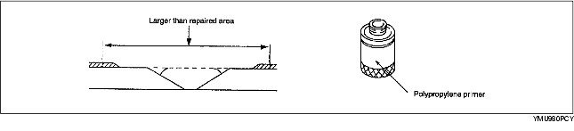
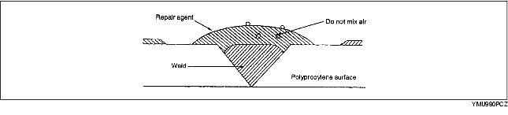
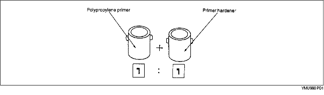

Repair of polypropylene bumpers having damage that has reached the surface of the polypropylene and are too serious to be restored by painting only.

1. Cut the rough edges around the damage with a knife to make it smooth. Sand the area with a sander to make an angle of about 45°.

2. Weld the damaged area.


3. Melt the polypropylene welding rod with a heat gun and deposit it the cracked area.


4. Sand the surface of the polypropylene gradually as it is easily melted by the abrasion heat. Sand the area to which repair agent will be applied.

5. Uniformly apply polypropylene primer with a brush to an area larger than the repaired area. Allow to dry about 10 minutes at 20 °C {68 °F}.

6. Mix the main agent and the stiffening agent in a ratio of one to one. Apply the mixed repair agent to the damaged area.

The repair agent is a two part epoxy adhesive.
When the repair agent hardens, it will provide a good finish with the same flexibility as the polypropylens.
The repair agent for a urethane bumper is also a two part adhesive compound. However, this is different from that for a polypropylene bumper. If the incorrect repair agent is used, the repair will be faulty.
7. Sand the area with #180-240 sandpaper.
8. Degrease the painted surface.
9. Mix the primer and the hardener at a ratio of one to one. Apply the primer to the repaired area and the surface of the bumper with a brush or spray.

Use the primer within 16 hours after it is mixed.
10. Allow the part to dry.
11. Add the softener to the urethane primer surfacer and spray it on the repaired area.
12. Air drying 20 °C {68 °F} - 8 hours minimum.
Forced drying 60 °C {140 °F} - 1 hour
13. Lightly sand the complete surface of the bumper with #400-#600 sandpaper. Do not expose the surface of the polypropylene. (Wet or dry sanding is acceptable.)
14. Wipe the complete surface of the bumper with degreasing agent. Quickly wipe the surface with a clean rag to degrease it.
15. Apply a matching coat of body color to the polypropylene bumper.
16. Air drying 20 °C {68 °F} - 8 hours minimum.
Forced drying 60 °C {140 °F} - 1 hour